C4 ORIGINAL / 2D CITY BRAWLER / IN DEVELOPMENT
NIGHT
VIGILANTE
Elevated tracks. Wet pavement.
A pipe in reach. Trouble up ahead.
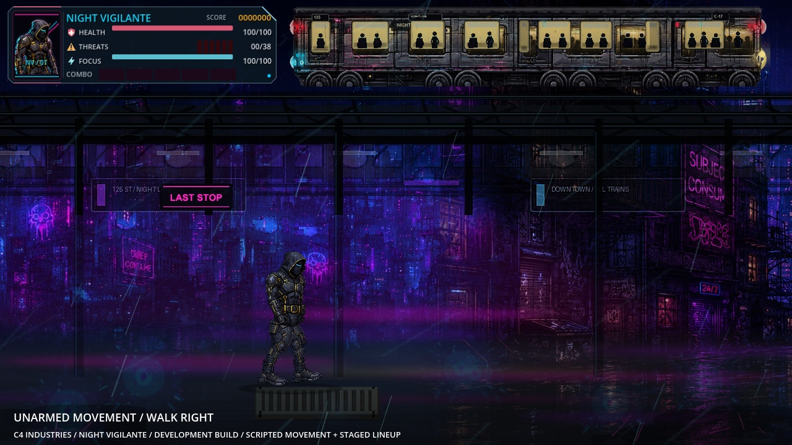
LATEST MOVEMENT CAPTURE / 00:39
See the game in motion.
The revised unarmed walk, directional steps and standing pose, followed by nine current enemy designs.
Actual Act One footage: scripted unarmed movement and a posed character lineup. Player damage is disabled for capture. Combat, weapons and enemy movement are still being revised.
FROM THE BUILD
Street-level detail.
Full-frame screenshots preserve the HUD, character poses and street environment.


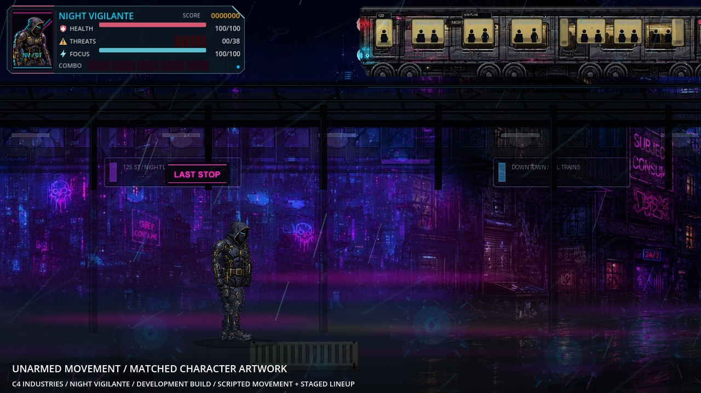

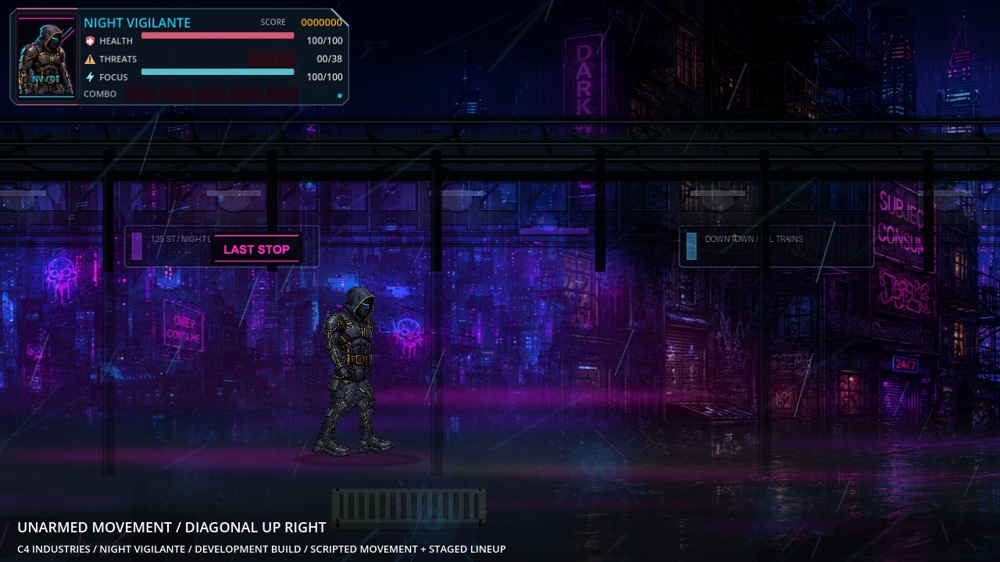
ENEMY LINEUP / 09
The people in your way.
Fresh posed captures of all nine current enemy types, alongside the revised hero. These are character inspection images from the running game.

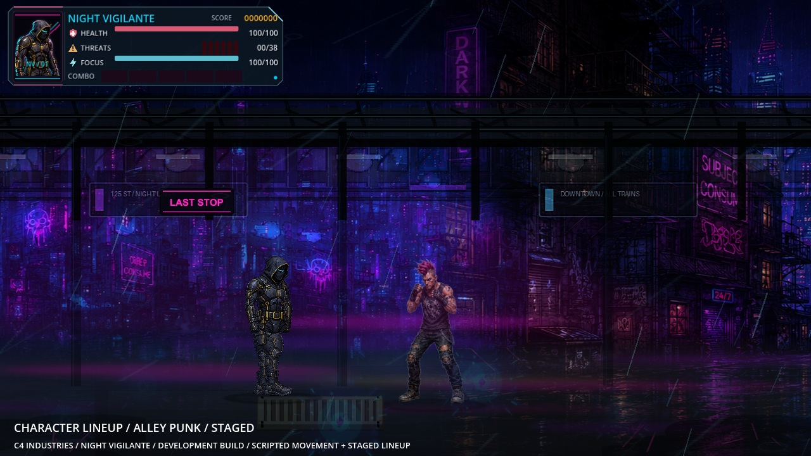
Alley Punk

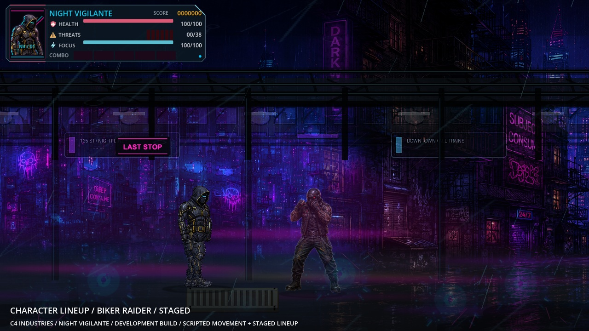
Biker Raider

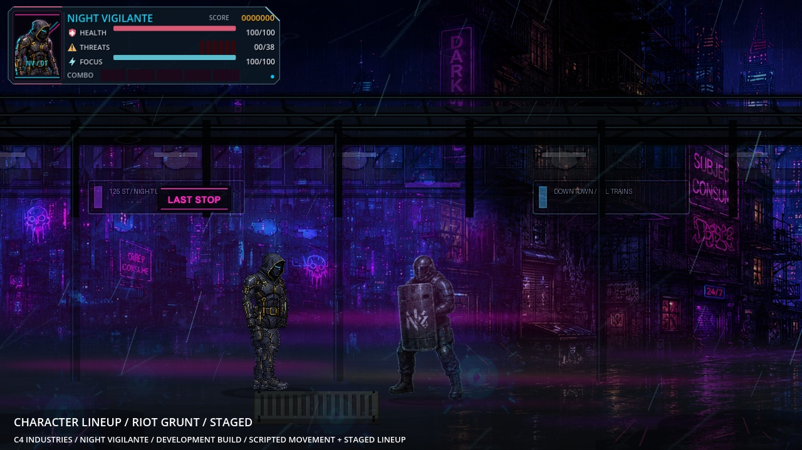
Riot Grunt

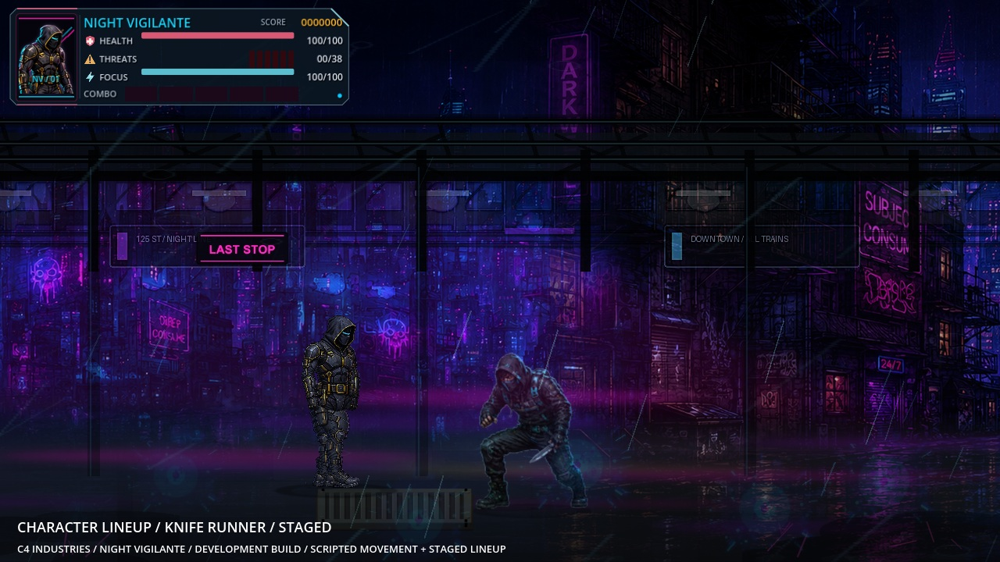
Knife Runner

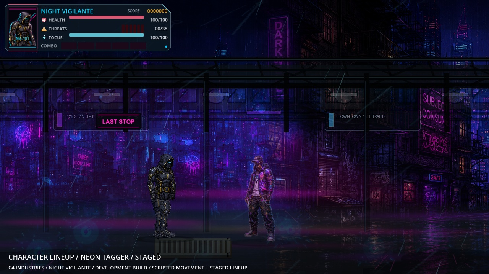
Neon Tagger

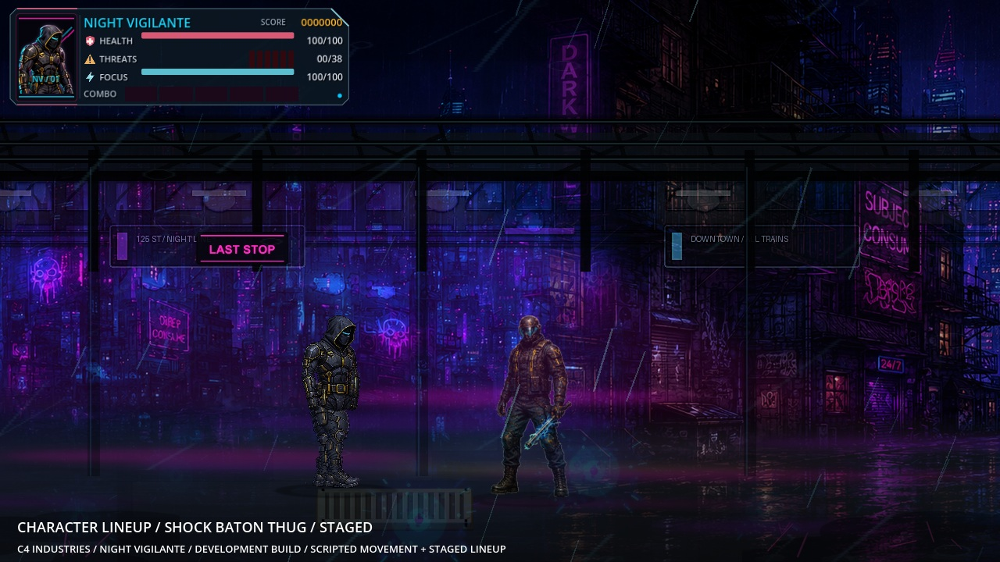
Shock Baton Thug

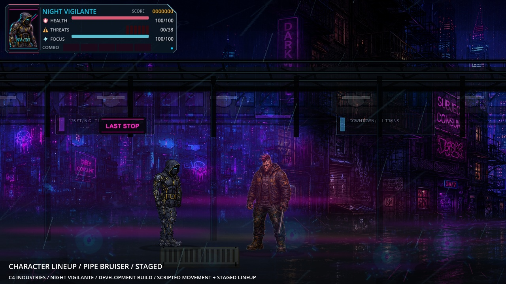
Pipe Bruiser

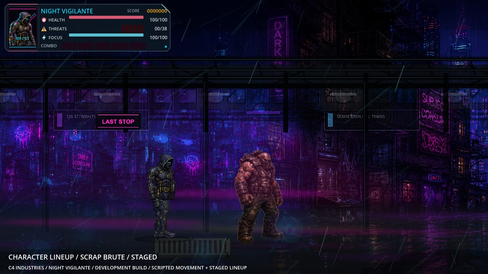
Scrap Brute

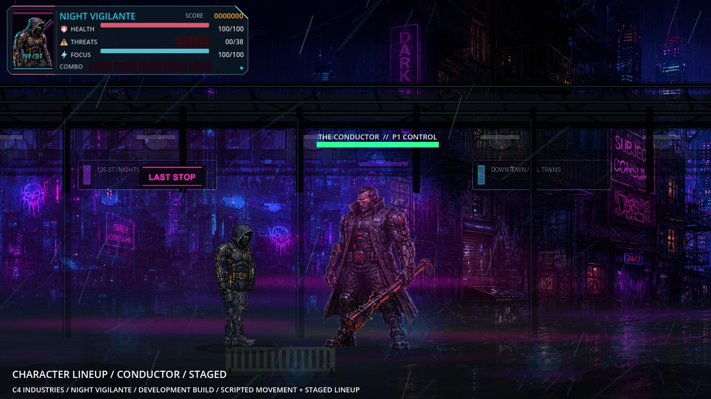
The Conductor
DEVELOPMENT NOTES / OCTOBER 2026
Current build.
The hero uses matched torso and leg artwork, with consistent armor, lighting and fuller proportions for unarmed standing and walking. Directional foot placement and connected-body checks have passed. Combat, held weapons, enemy movement and broader free-play testing remain in development.
Night Vigilante has no announced release date. This page follows the working build as the game develops.
ALSO IN THE LAB
Cornerworks
An original modular room prototype for Roblox Studio. The ready-to-open test is prepared; the final Studio import and doorway play test are still ahead.
Explore the current C4 downloads →